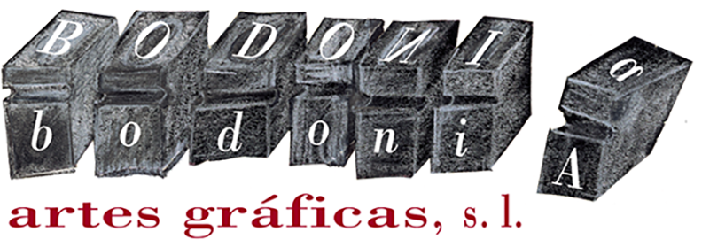

Diseño, maquetación e impresión.
Más de 35 años dando forma a tus ideas. Te ayudamos a elegir formato, papel y acabado; diseñamos, maquetamos e imprimimos en offset o digital en nuestro taller de La Zubia, Granada.

Más de 35 años dando forma a tus ideas. Te ayudamos a elegir formato, papel y acabado; diseñamos, maquetamos e imprimimos en offset o digital en nuestro taller de La Zubia, Granada.